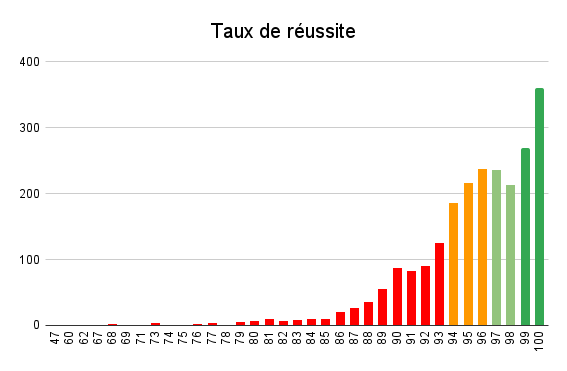
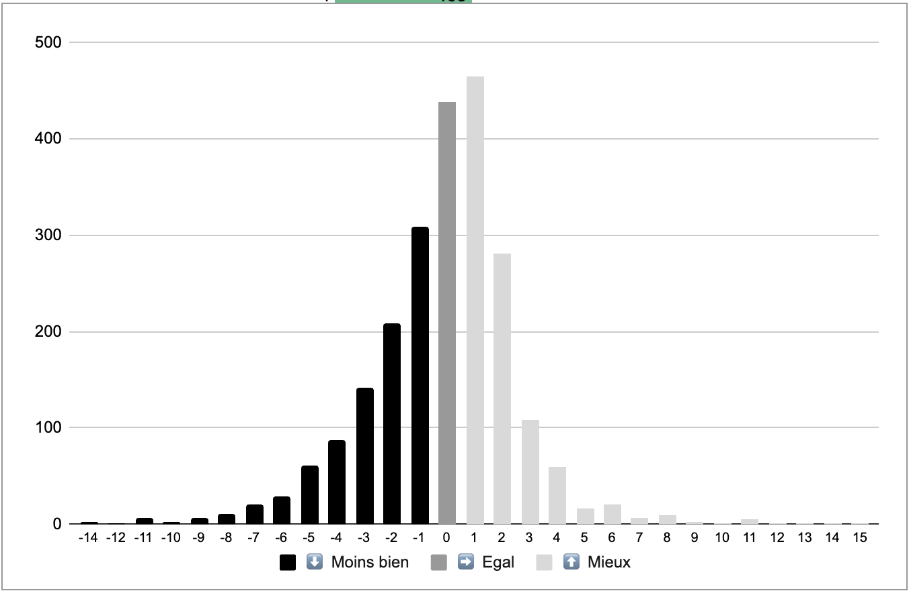

Les couleurs des marqueurs correspondent au taux de réussite du lycée en 2022 selon cette répartition :
|  |
|
Les flèches sur les marqueurs correspondent à la "valeur ajoutée" du lycée : s'il a fait mieux, pareil ou moins bien que son taux de réussite attendu étant donné le profil des élèves qui étaient entrés en seconde :
|  |
Pour calculer le taux de réussite attendu, sont pris en compte
|
Données : Data.Gouv.Fr téléchargées le 17 novembre 2023